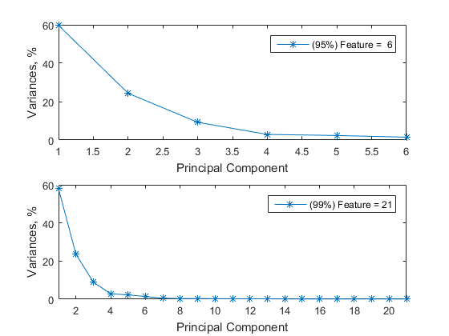

Example 01 Using PCA in Demension Reduction of SECOM Data
- 95% and 99% to rebuilt data
- compression ratio is about 1.02%(95%), 3.56%(99%)
- average error ratio less than 4.50%
- maxinum error ratio may exceed 6000%(95%), a necessary evil
Contents
READ DATA
if (exist('secom_set.mat', 'file') ~= 2)
if (exist('secom.data', 'file') == 0)
warning('no such data file.');
exit;
else
secom_raw = importdata('secom.data', ' ')';
[features, ~] = size(secom_raw);
navg = nanmean(secom_raw);
nidx = isnan(secom_raw);
midx = bsxfun(@and, nidx, sum(nidx) < features);
secom_raw(midx) = navg(nonzeros(bsxfun(@times, midx, 1:numel(navg))));
secom_raw = secom_raw';
save('secom_raw.mat', 'secom_raw');
end
else
load('secom_raw.mat');
end
X = secom_raw;
[len, features] = size(secom_raw);
fprintf('Sample Capacity = %d\n', len);
fprintf('Sample Features = %d\n', features);
Sample Capacity = 1567
Sample Features = 590
Dimension Reduction, Using SVD and Rebuilt Ratio = 95%
[W1, Y1, D1, mu1] = pca_svd(X, 0.95);
[lenY1, featureY1] = size(Y1);
fprintf('After PCA(95%%), Features = %d\n', featureY1);
fprintf(' Compression Ratio = %4.2f%%\n', featureY1 / features * 100);
Z = bsxfun(@plus, Y1 * W1', mu1);
err_mat = abs( bsxfun(@minus, Z, X) );
err_max_column = max( err_mat );
err_max = max( err_max_column ./ bsxfun(@plus, max(X), 1e-8) );
err_avg_column = mean( err_mat );
err_avg = mean( err_avg_column ./ bsxfun(@plus, max(X), 1e-8) );
fprintf(' Maximum Error Ratio = %4.2f%%\n', err_max * 100);
fprintf(' Average Error Ratio = %4.2f%%\n', err_avg * 100);
After PCA(95%), Features = 6
Compression Ratio = 1.02%
Maximum Error Ratio = 6643.51%
Average Error Ratio = 4.06%
Dimension Reduction, Using EIG and Rebuilt Ratio = 99%
[W2, Y2, D2, mu2] = pca_eig(X, 0.99);
[lenY2, featureY2] = size(Y2);
fprintf('After PCA(99%%), Features = %d\n', featureY2);
fprintf(' Compression Ratio = %4.2f%%\n', featureY2 / features * 100);
Z = bsxfun(@plus, Y2 * W2', mu2);
err_mat = abs( bsxfun(@minus, Z, X) );
err_max_column = max( err_mat );
err_max = max( err_max_column ./ bsxfun(@plus, max(X), 1e-8) );
err_avg_column = mean( err_mat );
err_avg = mean( err_avg_column ./ bsxfun(@plus, max(X), 1e-8) );
fprintf(' Maximum Error Ratio = %4.2f%%\n', err_max * 100);
fprintf(' Average Error Ratio = %4.2f%%\n', err_avg * 100);
After PCA(99%), Features = 21
Compression Ratio = 3.56%
Maximum Error Ratio = 431.37%
Average Error Ratio = 3.04%
Plot the Principal Component Variances, After PCA
figure(1); foo = @( x )( x ./ sum(x) * 100 );
subplot(2, 1, 1); title('Rebuilt Result(95%)');
plot(foo(D1), '-*'); xlim([1, length(D1)]);
legend( sprintf('(95%%) Feature = %2d', featureY1) );
xlabel('Principal Component'); ylabel('Variances, %');
subplot(2, 1, 2); title('Rebuilt Result(99%)');
plot(foo(D2), '-*'); xlim([1, length(D2)]);
legend( sprintf('(99%%) Feature = %2d', featureY2) );
xlabel('Principal Component'); ylabel('Variances, %');
saveas(gcf, 'example02', 'png');
